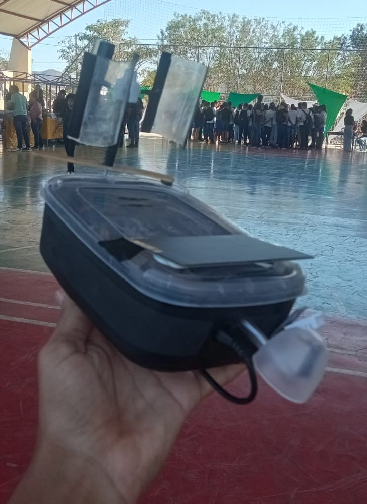
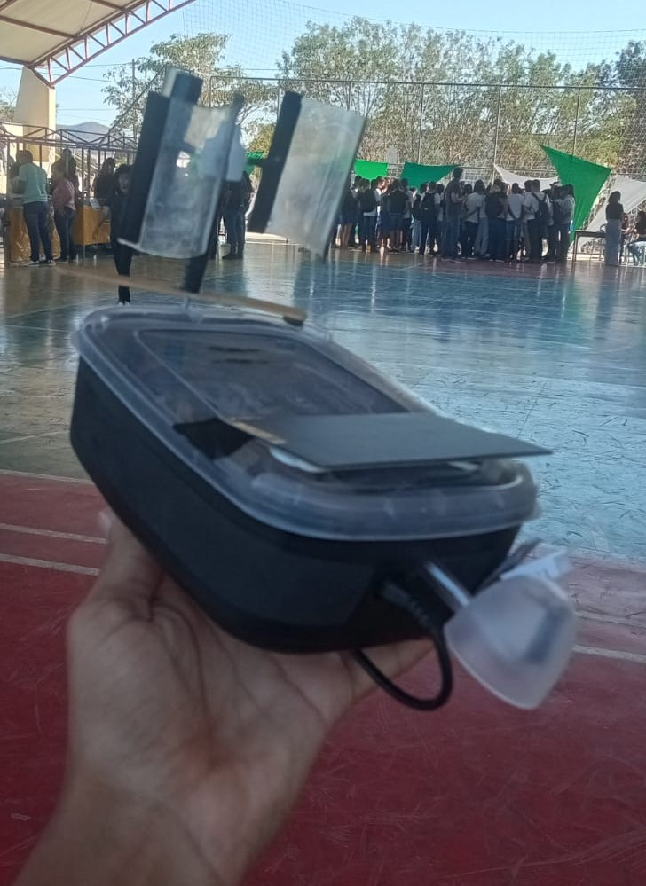

Projetos e Experiencia Profissional
AD Gestão |Ferramentas utilizadas: Python, MatplotLib, Firebase, Arduino
O AD Gestão é uma plataforma online desenvolvida para otimizar a gestão financeira de instituições religiosas, com foco em facilitar a organização e a integração entre congregações. O sistema substitui ferramentas tradicionais, como papel e planilhas, por uma solução moderna e intuitiva, adaptada às necessidades das igrejas. Entre suas principais funcionalidades estão o gerenciamento de membros e dizimistas, estatísticas financeiras detalhadas, emissão de relatórios, controle de pagamentos e dívidas, além de um sistema de alertas e lembretes. A plataforma também permite gerenciar permissões de usuários, integrando tesoureiros e pastores em um ambiente seguro e eficiente. Com o AD Gestão, as congregações podem realizar um acompanhamento financeiro mais ágil e organizado, alinhado às suas responsabilidades administrativas e espirituais.

Agromet |Ferramentas utilizadas: Python, MatplotLib, Firebase, Arduino
Desenvolvi um sistema de monitoramento de irrigação baseado em IoT, integrando uma estação meteorológica conectada à internet para otimizar o uso da água em plantações. O sistema coleta dados climáticos por meio de sensores, processa essas informações para calcular a necessidade hídrica da cultura e envia os resultados para um servidor Firebase. Esses dados são exibidos em uma aplicação PWA, que também permite acessar o histórico de medições.
 

O firmware foi desenvolvido em C/C++ usando a IDE Arduino, enquanto a interface da aplicação foi construída em Python. Entre as funcionalidades, estão o gerenciamento de culturas, cálculo da evapotranspiração de referência e diária, visualização de dados climatológicos e do tempo de irrigação ativo, além de métricas para economia de consumo de água. Este projeto alia tecnologia e sustentabilidade, oferecendo uma solução prática para o monitoramento eficiente da irrigação agrícola.
Estagiário em Suporte de TI |Instituto Federal Baiano - Campus Guanambi
De julho à agosto de 2022Dentre as experiências desenvolvidas, efetuou-se a confecção da ponta de cabo de rede RJ45; instalação e configuração de sistemas operacionais; criação de imagens de sistemas; limpeza e manutenção de computadores e notebooks; clonagem de imagem em vários computadores; criação e adaptação de soluções simples para tarefas repetitivas; configurações básicas de rede de computadores. De forma geral, a finalidade dessas atividades foram promover a manutenção dos equipamentos eletrônicos e garantir o funcionamento da infraestrutura tecnológica interna do Instituto, para a efetivação de suas tarefas.